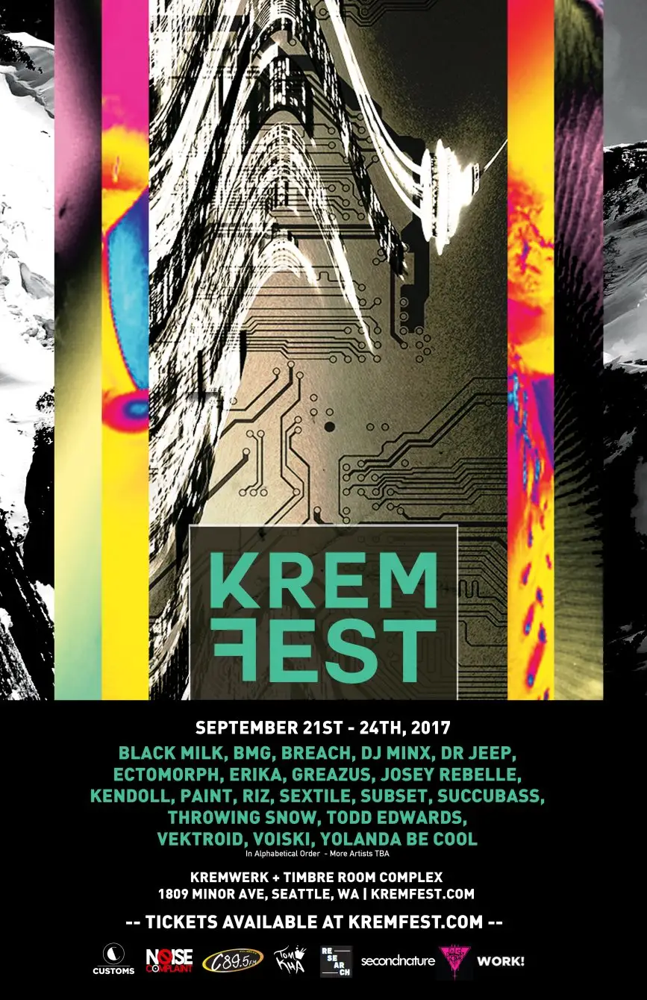
🏛️ 1ST VR FESTIVAL EDITION • SEPTEMBER 21–24, 2017
Kremfest 2017 VR Genesis
During the inaugural 2017 edition of KremFest, virtual reality made its landmark debut at the Kremwerk / Timbre Room Complex, organized and curated by David Ayala under VR Experiences Powered by Kinetoscope VR (#neoK) and supported by 4Culture Tech Specific.
✦
The Genesis of VR at KremFest
In September 2017, as Kremwerk launched the very first multi-room KremFest electronic music and multimedia festival, an experimental virtual reality exhibition was introduced on-site powered by Kinetoscope VR (#neoK), curated by David Ayala, and sponsored by 4Culture Tech Specific.
Attendees donned PlayStation VR (PSVR) headsets set up within the venue's multimedia spaces. Rather than focusing on traditional seated or audio-dependent cinema, the showcase purposely curated experiential, abstract, and trippy virtual reality pieces designed to blend seamlessly into the high-energy club atmosphere alongside live electronic acts.
This 2017 showcase kicked off a multi-year tradition for the festival. Starting with the landmark 2018 edition, curation and production were officially handed over to Larry James (VRMakerDome / Wulf Design) and Julia Jackson (UpLiftVR Studios), establishing an international juried showcase with room-scale headliners, worldwide submissions, and technical hardware orchestration across the complex.
2017 Showcase Lineup at a Glance
- Beşik // The Cradle • Tanya Kovaleva • 8 min 04 sec • Türkiye
- Wind & Water • Gerhard Funk • 1 min 26 sec • Germany
- Shameful Conquest • Dr. Sarah Jones & Steve Dawkins • 7 min 00 sec • UK
- Praying from Afar (遥远祈祷) • Melody Liu • 3 min 59 sec • Singapore / China
- Down To The Plastic Ocean • Dan Aguar & Kathy Kirbo • 4 min 00 sec • USA
- Neoptera (Neoptera Transition Chip) • Suzanne Bekirovic • 6 min 11 sec • Netherlands
- Mayhem • Zanne (Suzanne) Bekirovic • 4 min 02 sec • Netherlands
- Secret Detours • Dr. Elke Reinhuber • 5 min 00 sec • Singapore / Germany
- "Heart of Fartness" starring The Toxic Avenger (Toxie's Toxic Twin Trauma) • Lloyd Kaufman & John Brennan (Troma Entertainment) • 15 min 00 sec • USA
- ROUTE 360 • Alfonso García • 6 min 00 sec • Spain
- The Human Circuit - "How It Used To Be" - Official VR Music Video • Nathan Goodfellow (360Production.Services) / The Human Circuit • 3 min 00 sec • USA
- STEAM HORSE - VR Short Film (The Museum of Wisdom 3D) • FIAT FROST aka Pakapol Rajchawong • 16 min 55 sec • Thailand
- E-Meal • Jack Gray • 8 min 02 sec • USA
- Nightmares • Assem Kroma (Awesome Creative Productions) • 4 min 57 sec • Canada
✦
2017 Official Selections (14 Juried Works • 1h 33m Total Runtime)
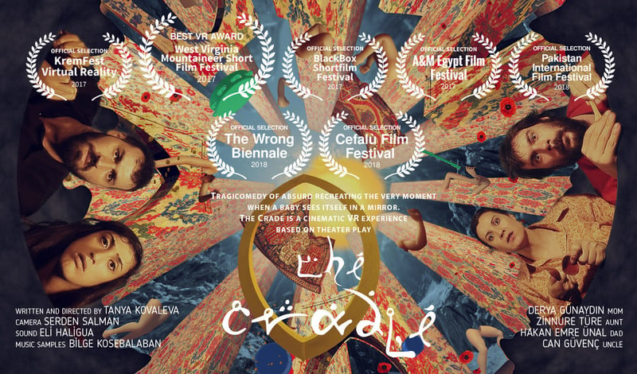
Beşik // The Cradle
By Tanya Kovaleva
"Happy to be a part of Kremfest! Thanks for having us on the board!!!"
— Tanya So (Kovaleva), Director
A tragicomedy of the absurd recreating the foundational moment a baby first sees itself in a mirror and grapples with self-representation. Set in a surreal eastern cityscape centered on a cradle, family members gather to claim family resemblance, while the magic mirror reflects a fragmented cloud of identities. The viewer is eventually placed inside the cradle as the baby who 'didn't take after anybody.'
- Selection Track: 🏆 Official Juried Selection
- Genre: Cinematic VR / Absurdist Tragicomic Narrative
- Runtime: 8 min 04 sec
- Format: VR 360° Monoscopic Video (3240×2160, Stereo Audio)
- VR Comfort: Comfortable
- Origin: Türkiye
✦
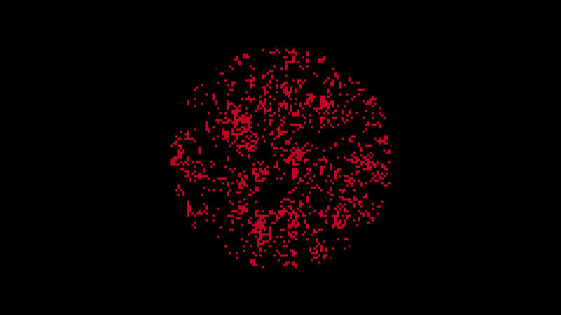
Wind & Water
By Gerhard Funk
A minimalist, mesmerizing visual exploration of kinetic motion, fluid particle dynamics, and atmospheric forces in spatial immersion. Created by German animator and academic Gerhard Funk (Burg Giebichenstein University of Art and Design / Ars Electronica collaborator).
- Selection Track: 🏆 Official Juried Selection
- Genre: Abstract CGI / Experimental Kinetic Art
- Runtime: 1 min 26 sec
- Format: VR / 360° Experimental Animation
- VR Comfort: Comfortable
- Origin: Germany
✦
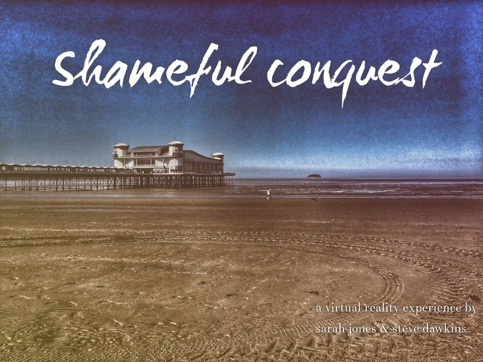
Shameful Conquest
By Dr. Sarah Jones & Steve Dawkins
An innovative, practice-based virtual reality exploration of audience presence, emotional immersion, and non-directed storytelling from acclaimed VR scholar Dr. Sarah Jones and Steve Dawkins.
- Selection Track: 🏆 Official Juried Selection
- Genre: Practice-Based VR / Experimental Immersive Art
- Runtime: 7 min 00 sec
- Format: PlayStation VR / 360° Immersive Cinema
- VR Comfort: Comfortable
- Origin: UK
✦
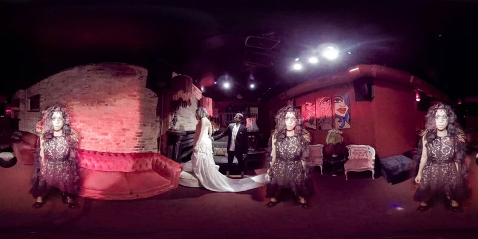
Praying from Afar (遥远祈祷)
By Melody Liu
An award-winning 360° music video fusing Chinese folk and electronica, examining themes of love, jealousy, and vengeful emotion through a wedding gone awry. Created as part of the NYFA Narrative VR workshop, it marks the first Chinese-language 360° music video.
- Selection Track: 🏆 Official Juried Selection
- Genre: Spatial Music Video / Folk-Electronica
- Runtime: 3 min 59 sec
- Format: 360° Immersive Music Video
- VR Comfort: Comfortable
- Origin: Singapore / China
✦
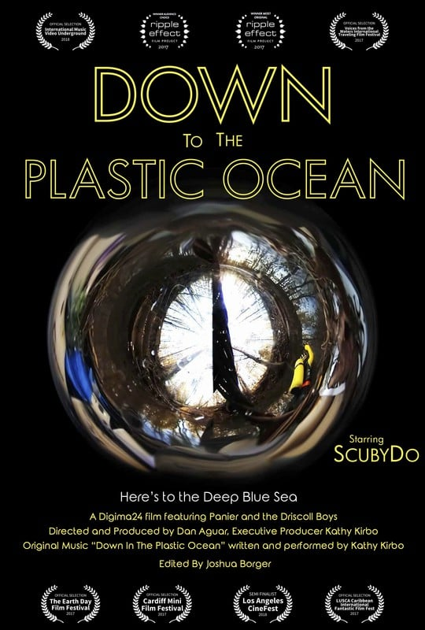
Down To The Plastic Ocean
By Dan Aguar & Kathy Kirbo
A lyrical 360° environmental documentary following the journey of a discarded plastic toy scuba diver ('ScubyDo') from an inland storm water drain in Athens, Georgia, down rivers and streams out into the ocean, highlighting the visceral impact of plastic pollution on aquatic ecosystems.
- Selection Track: 🏆 Official Juried Selection
- Genre: Eco-Documentary / Experimental 360°
- Runtime: 4 min 00 sec
- Format: 360° VR Documentary / Environmental Cinema
- VR Comfort: Comfortable
- Origin: USA
✦
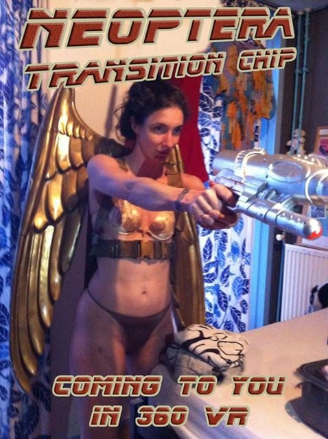
Neoptera (Neoptera Transition Chip)
By Suzanne Bekirovic
A stereoscopic 360° sci-fi cult film by Amsterdam multimedia artist and former VJ Suzanne Bekirovic. The story follows the last surviving human navigating a dystopian, cybernetic landscape in a world governed by machines.
- Selection Track: 🏆 Official Juried Selection
- Genre: Sci-Fi VR / Dystopian Cyberpunk
- Runtime: 6 min 11 sec
- Format: Stereoscopic 360° VR / Sci-Fi Short
- VR Comfort: Comfortable
- Origin: Netherlands
✦
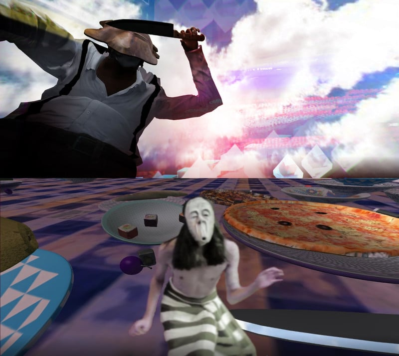
Mayhem
By Zanne (Suzanne) Bekirovic
An immersive hyper-reality journey that explores the sudden unraveling of domestic tranquility. Ordinary household objects collapse into surreal chaos, dissolving abstractions, and giant forks, reflecting Bekirovic's signature surreal visual design.
- Selection Track: 🏆 Official Juried Selection
- Genre: Surreal Hyper-Reality / Abstract Experiential Art
- Runtime: 4 min 02 sec
- Format: Interactive VR / 360° Experience (Unity)
- VR Comfort: Comfortable
- Origin: Netherlands
✦
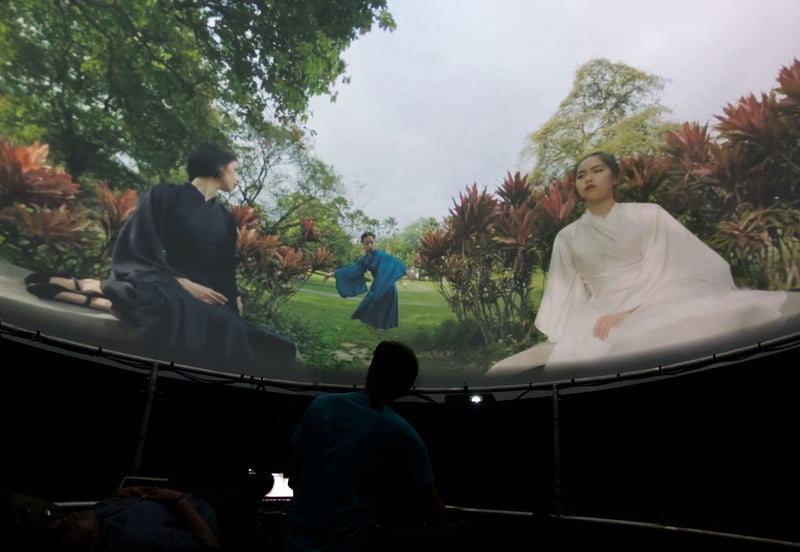
Secret Detours
By Dr. Elke Reinhuber
An artistic exploration of decision-making, counterfactuals, and 'forking paths' shot in Singapore's historic Yunnan Garden prior to its reconstruction. Four dancers choreographed in colors representing the cardinal directions guide the viewer's gaze through spatial presence and temporal interventions.
- Selection Track: 🏆 Official Juried Selection
- Genre: Immersive Choreography / Spatial Narrative
- Runtime: 5 min 00 sec
- Format: 360° VR Cinema / Multi-Camera Array
- VR Comfort: Comfortable
- Origin: Singapore / Germany
✦
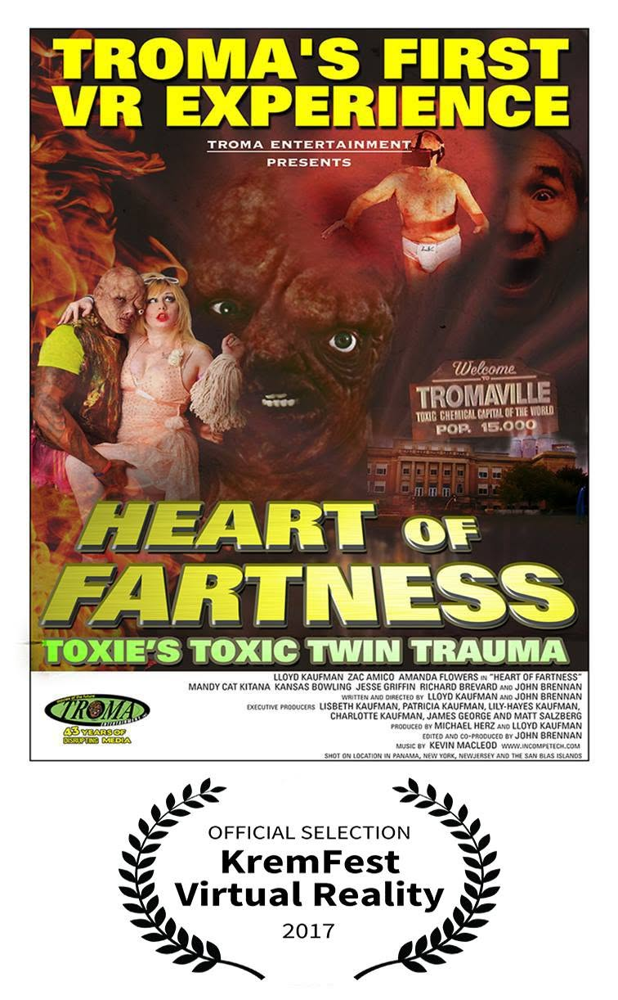
"Heart of Fartness" starring The Toxic Avenger (Toxie's Toxic Twin Trauma)
By Lloyd Kaufman & John Brennan (Troma Entertainment)
Troma Entertainment's wild, anarchic VR venture starring The Toxic Avenger. A manic, satire-laden 360° immersion into Toxie's bizarre world, presented as a special feature at KremFest 2017.
- Selection Track: 🏆 Official Juried Selection
- Genre: VR Cult Comedy / Satire / Troma
- Runtime: 15 min 00 sec
- Format: PlayStation VR / 360° Experience
- VR Comfort: Comfortable
- Origin: USA
✦
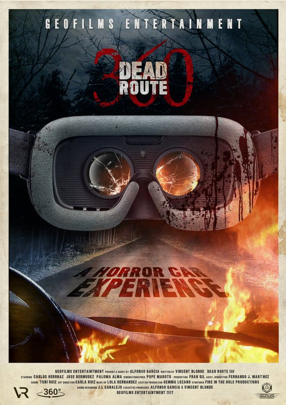
ROUTE 360
By Alfonso García
A dynamic 360° journey along scenic Spanish routes, capturing visceral open-road kinematics, landscape geometry, and atmospheric road-trip storytelling.
- Selection Track: 🏆 Official Juried Selection
- Genre: Cinematic Road Narrative / 360° Travel
- Runtime: 6 min 00 sec
- Format: 360° Cinematic Road Experience / VR Short
- VR Comfort: Comfortable
- Origin: Spain
✦
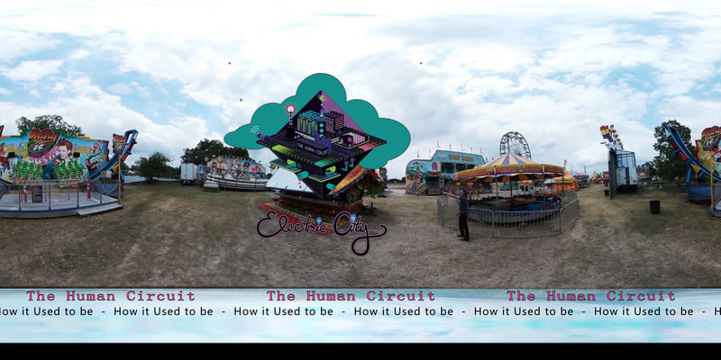
The Human Circuit - "How It Used To Be" - Official VR Music Video
By Nathan Goodfellow (360Production.Services) / The Human Circuit
A psychedelic, out-of-body 360° music video for Austin indie-psych band The Human Circuit's track from their Electric City album. Blending vivid color-shifting dimensions with audio-reactive visual flow.
- Selection Track: 🏆 Official Juried Selection
- Genre: Psychedelic Indie Rock / Spatial Visuals
- Runtime: 3 min 00 sec
- Format: 360° VR Music Video / Spatial Audio
- VR Comfort: Comfortable
- Origin: USA
✦
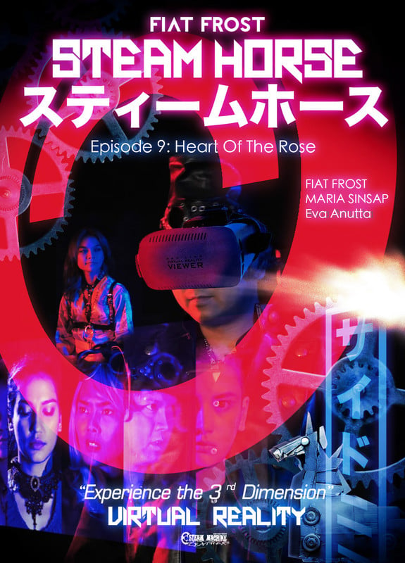
STEAM HORSE - VR Short Film (The Museum of Wisdom 3D)
By FIAT FROST aka Pakapol Rajchawong
"Very unique, stylish and artistic."
— Pakapol Rajchawong, Director
A steampunk-infused 3D virtual reality animation set within a mythical 'Museum of Wisdom,' following mechanical marvels and spatial fantasy architecture. Pakapol Rajchawong's signature Thai digital art production.
- Selection Track: 🏆 Official Juried Selection
- Genre: Steampunk Sci-Fi / 3D VR Animation
- Runtime: 16 min 55 sec
- Format: 3D Stereoscopic VR Animation / Short Film
- VR Comfort: Comfortable
- Origin: Thailand
✦
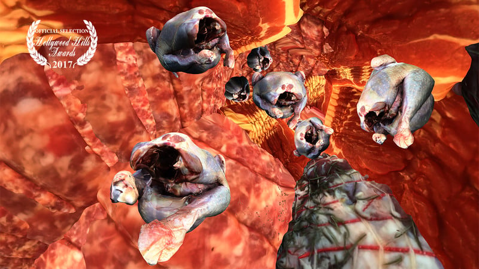
E-Meal
By Jack Gray
A satirical experiential exploration of modern digital dining, meal consumption rituals, and electronic connection in an increasingly virtualized society.
- Selection Track: 🏆 Official Juried Selection
- Genre: Satirical Experiential Art / Social Commentary
- Runtime: 8 min 02 sec
- Format: 360° VR Short / Experimental Dining
- VR Comfort: Comfortable
- Origin: USA
✦
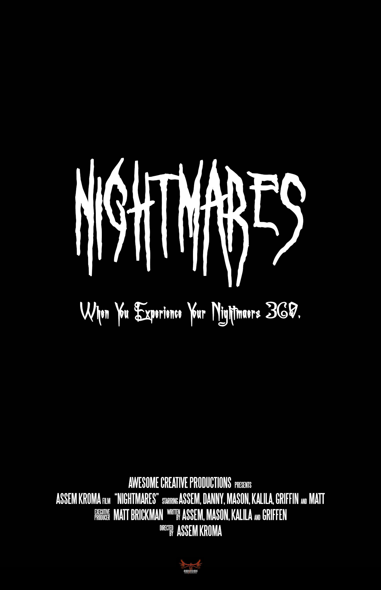
Nightmares
By Assem Kroma (Awesome Creative Productions)
"When You Experience Your Nightmares 360." A chilling 360° horror dive into nocturnal subconscious dread and psychological terror from director Assem Kroma and Awesome Creative Productions. Viewers are immersed in dark surreal hallucinations and creeping ambient dread.
- Selection Track: 🏆 Official Juried Selection
- Genre: VR Horror / Psychological Suspense
- Runtime: 4 min 57 sec
- Format: 360° Horror / Psychological Suspense VR
- VR Comfort: Intense (Psychological Horror)
- Origin: Canada
✦
💬 2017 Historical Feedback & Floor Impressions
"Happy to be a part of Kremfest! Thanks for having us on the board!!!"
— Tanya So (October 2017)
"Very unique, stylish and artistic."
— Pakapol Rajchawong (October 2017)